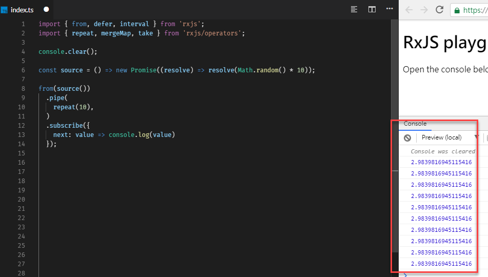

來探討一下 RxJS 的 repeat 這個 operator
repeat 的功能
repeat的功能是當一個Observable完成時，會重新再subscriben次
使用的方式是
1 | obs.pipe(retry()).subscribe(); |
repeat(count: number: -1)當不給重複的次數時，將會一直有作用
基本範例
1 | import { of } from 'rxjs'; |
探討
根據上面的簡單介紹，可以知道 repeat 的用法。延伸思考，repeat 的作用範圍是如何定義，而 Observable 所傳出的值是否如果我們所預期的呢? 如果搭配其他的 operator 是否有先後順序的問題?
先來一個簡單的問題，重複取十次值
1 | const source = () => new Promise((resolve)=> resolve(Math.random()*10)); |
順序重要嗎?
根據實驗，順序其實不重要，都會被重新 subscribe
Observable 的值呢
根據實驗，repeat 所使用的 observable 值是第一次發生的結果，這表示，如果想要做到每一次重新啟動都要觸發 source observable 時，就必須使用不同的寫法

-
解法1: 如果想要的效果可以使用 interval 完成，改用 interval + mergeMap(or other map) + take 來完成
-
解法2: 使用
defer來包 Observable/Promise1
2
3
4
5
6
7
8
9const source = () => new Promise((resolve) => resolve(Math.random() * 10));
defer(() => from(source()))
.pipe(
repeat(10)
)
.subscribe({
next: value => console.log(value)
});
啟動範圍
repeat 會重新 subscribe 所歸屬的 Observable
小結
每一個 operator 都有可以細細品嘗的細節，跟 repeat 類似的 operator 有 repeatWhen 、retry、retryWhen ，也都可以去看看了解一下